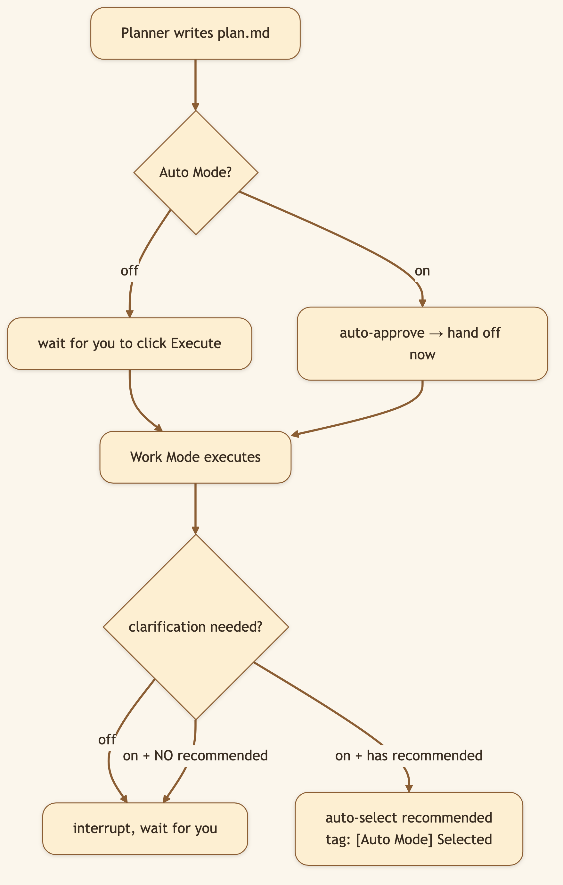
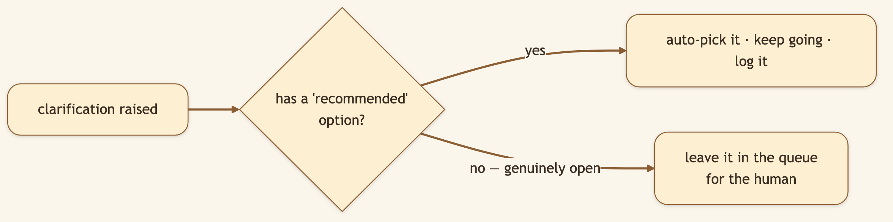

LinkedIn hook (use as the post's first line): "Planning gives you control. Sometimes you don't want control — you want to hand off a goal, close the laptop, and come back to finished work. Here's the switch that makes that safe." Audience: LinkedIn → Medium. Busy operators, founders, anyone who wants hands-off automation without losing the audit trail.
Approval gates are a safety feature. They're also friction — and for tasks you trust, friction is just latency between you and the result. Auto Mode lets you choose, per task, where you sit on the trust-vs-control dial.
🖼️ [User add: image containing — the Auto Mode toggle in the input toolbar's privacy/auto menu, switched ON. Capture from the running app.]
Auto Mode isn't a third mode. It's a modifier on Plan Mode — a toggle that removes two pauses:
[Auto Mode] Selected: … marker you can audit.What it does not do: make Work Mode reckless, auto-escalate simple tasks, or change execution itself. The phasing, the DAG, the evaluator, the retries — all identical. Auto Mode only removes the waiting.


This is the thoughtful part: Auto Mode doesn't flip a coin on genuinely open questions. It only auto-answers forks where the agent already has a defensible default.
🖼️ [User add: image containing — a transcript snippet showing a clarification auto-resolved, with the literal "[Auto Mode] Selected:
auto_mode lives on the thread state and the run payload. resolve_auto_mode() (REST path) and _auto_mode_enabled() (live agent loop) both follow the same order: explicit request override → thread state → False.PlannerMiddleware, plan_status = "approved" if auto_mode and not clarification_pending else "draft", and the SSE event is tagged plan_auto_approved instead of plan_created.ClarificationMiddleware caches the flag on the runtime context (so the async tool-call wrapper can read it) and, when a recommended option exists, returns a Command that records the answer with the [Auto Mode] Selected: prefix.spawn_work_mode_handoff() fires the Work Mode run on a daemon thread — re-reading plan.md from disk first so any edits are honored.Everything is fully auditable after the fact: every auto-decision is stamped in the transcript and the plan carries an approved_at timestamp.
[Auto Mode] Selected: and plan_auto_approved make every autonomous decision greppable.plan.md at handoff is the seam that lets your between-approval edits take effect. A little ceremony buys a lot of steerability.[0:00–0:10] Hook: "I wanted to give my AI a research goal and just… walk away. But I didn't want it guessing on the important stuff. Here's how that works."
[0:10–0:25] Screen — enable Plan + Auto Mode, submit a goal: "Plan Mode on, Auto Mode on. I submit, and I close the laptop."
[0:25–0:45] Screen — come back, scroll the transcript: "It planned, approved itself, and ran. And here — it hit a fork, took the recommended option, and logged exactly what it chose. The genuinely open questions? It left those for me."
[0:45–0:55] Close: "Autonomy where it's safe, a pause where it isn't. Fully auditable. Open source, link below."
Enable both Plan Mode and Auto Mode, submit a research goal, and walk away. Come back to finished deliverables and a full record of every decision it made.